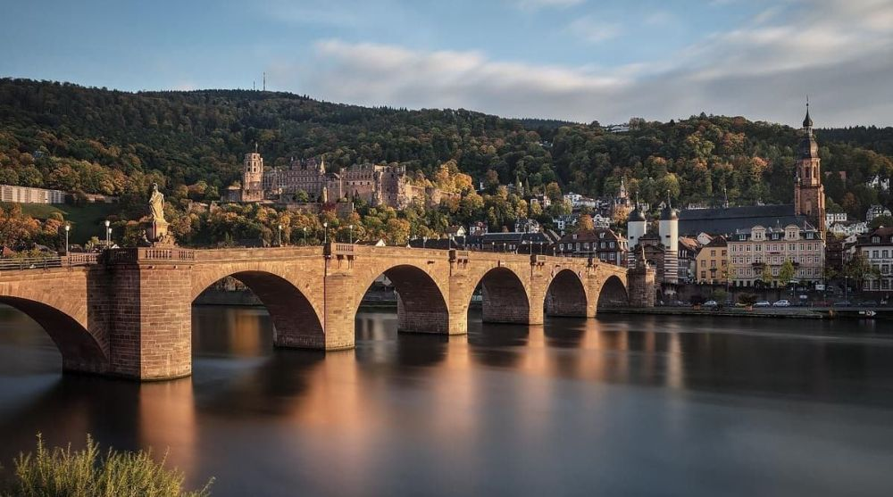

Descoperă Heidelberg - O incursiune în orașul universitar
Heidelberg este un oraș universitar plin de istorie din Germania, oferind o varietate de atracții pentru vizitatori:
-

Castelul Heidelberg - Simbol al orașului
Această fortăreață în ruine oferă priveliști spectaculoase asupra orașului și râului Neckar.
-

Altstadt - Centrul istoric
Cartierul istoric este plin de străzi pitorești, clădiri istorice și cafenele primitoare.
-

Philosophenweg - Priveliște panoramică
Această cale înălțată oferă priveliști panoramice asupra orașului și castelului, fiind un loc preferat al gânditorilor.
-

Universitatea din Heidelberg - Pionierat academic
Cea mai veche universitate din Germania prezintă clădiri istorice și o atmosferă academică distinctă.
-

Promenada Neckar - Relaxare la râu
O plimbare pe malul râului Neckar oferă liniște și frumusețe naturală în inima orașului.
Concluzii
Heidelberg oferă o combinație unică între istorie și atmosfera universitară, captivând inimile vizitatorilor.